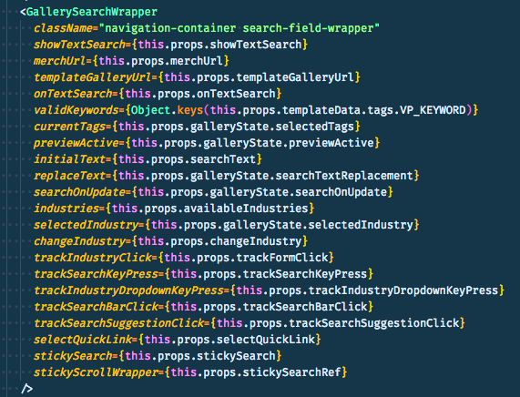

Hot Garbage Architecture
clean code is dead
4️⃣ tenants of Hot Garbage Architecture
These are not hard and fast rules, just things to think about to help keep code pliable.
pliable
Biggest enemy of this tenant is speculative generality.
We build things that we assume will stand the test of time instead of creating the things that we need for right
now and see how it evolves.
DRY code is dead code
Playdoh example.
Pliable doh is easy to work with and change.
Dried doh is difficult to shape and cracks/breaks when pushed to change. Needs to be rehydrated in order to
change shape.
As developers, we like to have hard and fast rules for the ways we develop, but there are no universal rules.
There are no rules that can be applied to every situation.
There is a context for the rules and patterns we like to follow.
| know
stable
|
vs
|
don't know
unstable
|
There are things that we know that need to be stable or become stable over time.
The things that we don't know are things that need to stay pliable.
We get into trouble when we try to apply rules across this distinction.
DRY code is good for stable code, but when applied to things we don't know that need to change often, DRY
principles can prove to be more harmful that helpful.
Readability is high value for code that changes all the time, but is not as important for stable code.
Performance may trump readabiltiy for stable code.
⛳
hole in one odds
This is like optimizing your golf game around getting holes in one.
I don't need to become a better golfer (developer) if I can just get more holes in one (building things right
the first time).
SG creates this idea that we can get something correct the first time and not have to worry about it in the
future.
composable
Prefer components over configuration
Every props in this component adds some level of configuration and makes the component very opinionated and hard
to change.

reasonable
Reasonable vs nonreasonable.
Realistic vs speculative
https://matthiasnoback.nl/2018/01/churn-legacy-code/
Look at your code in terms of churn versus complexity.
Don't be eager to refactor code that is stable and has not been touched in a while.
If churn is low and complexity is high or churn is high but complexity is low, don't touch it.
Look for outliers with high churn and high complexity.
disposable
"When you add code, ask how easily it'll be removed when you realize you're wrong."
- Will Wilson
interface over implementation
Don't get caught up in the implementation of a component.
Think more about the interface of said component and how difficult or easy it will be to swap out in the future.
we aren't builders
We don't do work that has to last 50, 100, 200 years in the future.
Constraints change, code changes.
we are farmers
We work on living things that change and adapt and we need to program uncertainty into those things.
Cultivating is a mess and shit is the best fertilizer.
"Clean code is dead code, there's shit where money is made."
- Michael Chan
thanks